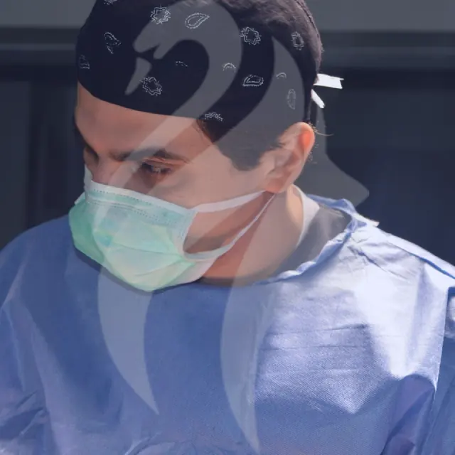

Le Dr Walid Balti, lauréat et ancien assistant de la Faculté de Médecine de Tunis, fait partie des leaders en chirurgie plastique, reconstructrice et esthétique. Fort de plus de 10 ans d'expérience dans les établissements les plus reconnus du pays, il participe régulièrement aux conférences et congrès internationaux pour faire évoluer sa formation en continu.
Il a effectué plusieurs stages de perfectionnement en chirurgie plastique et esthétique à Paris dans le secteur privé, et intervient régulièrement dans des émissions tunisiennes et françaises. De nombreux patients européens font appel à lui pour bénéficier de son expertise.
Inscrit au Conseil de l'Ordre des médecins tunisiens (N°13361) et membre de la Société Tunisienne de Chirurgie Plastique, il réalise ses interventions dans les meilleures cliniques du pays, agréées par le ministère de la Santé et conformes aux normes de sécurité et d'hygiène les plus rigoureuses.

WBRecevez un devis gratuit et personnalisé sous 24 h. Nos conseillers répondent à toutes vos questions, sans engagement.